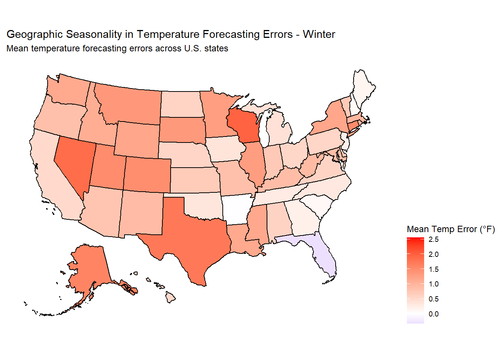
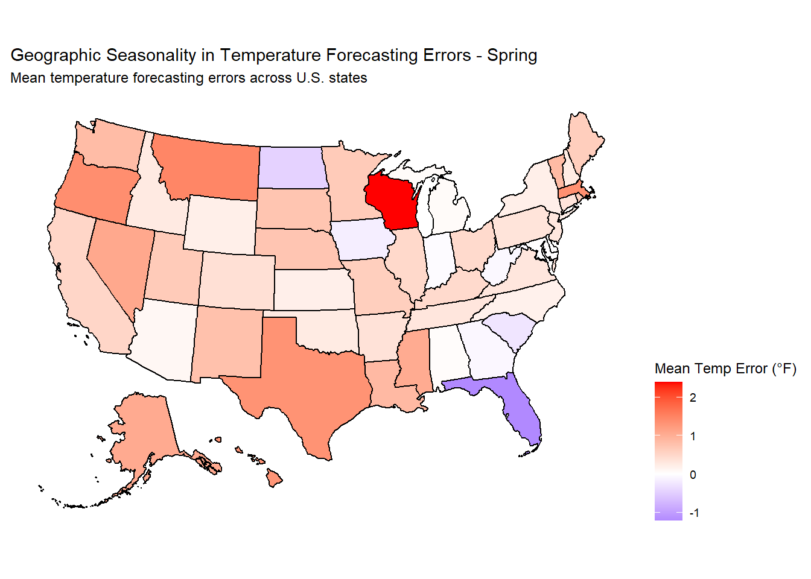
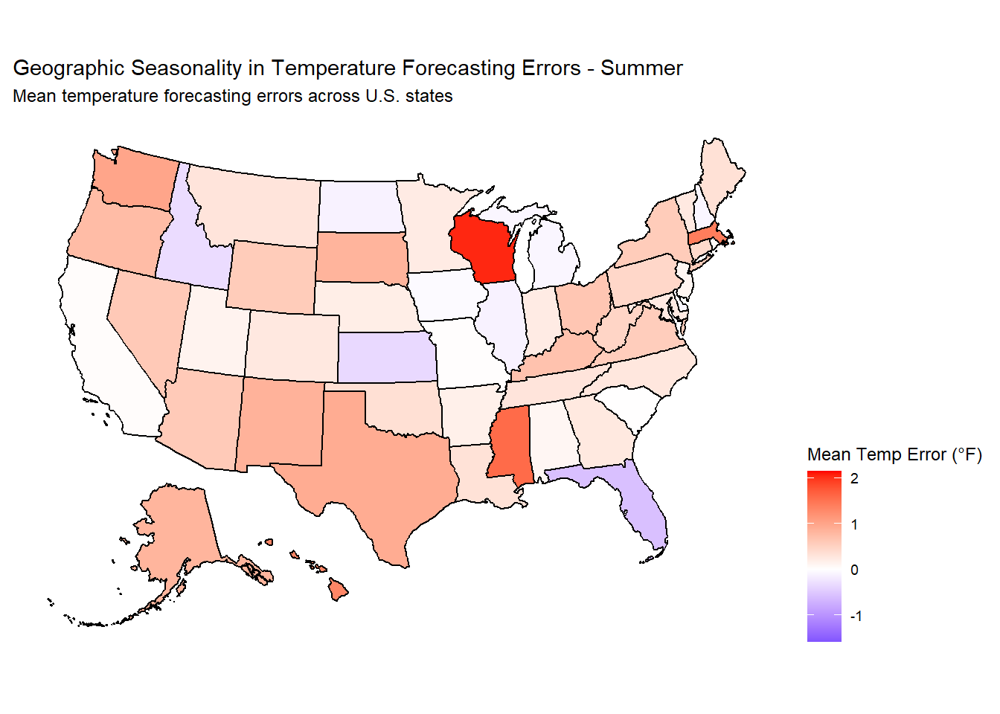
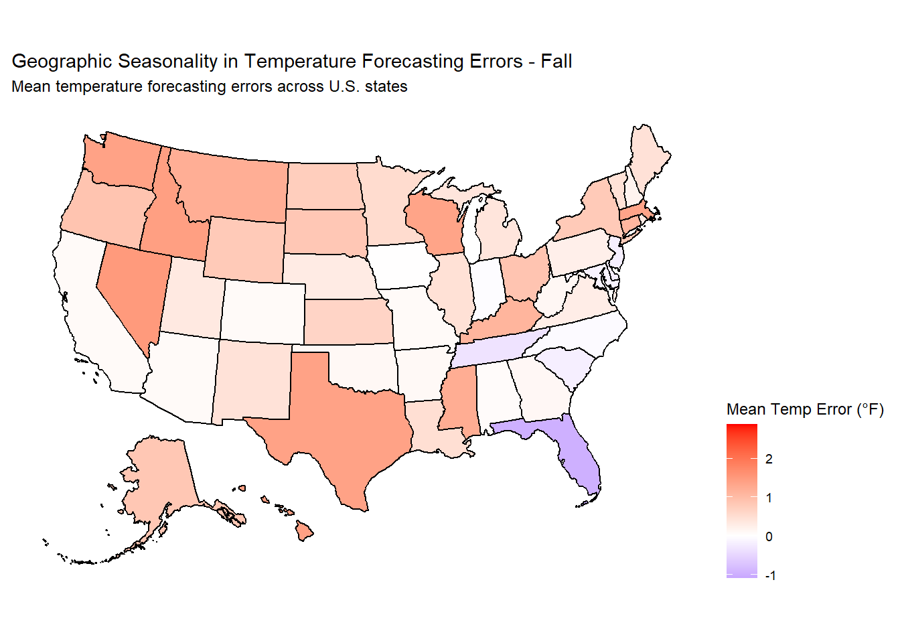
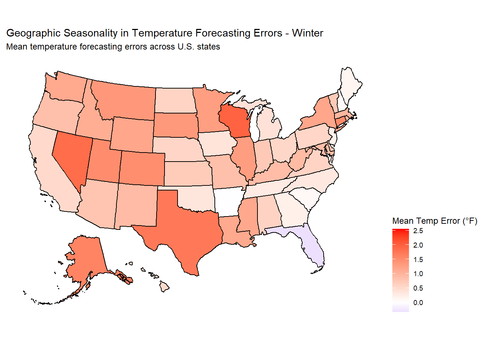
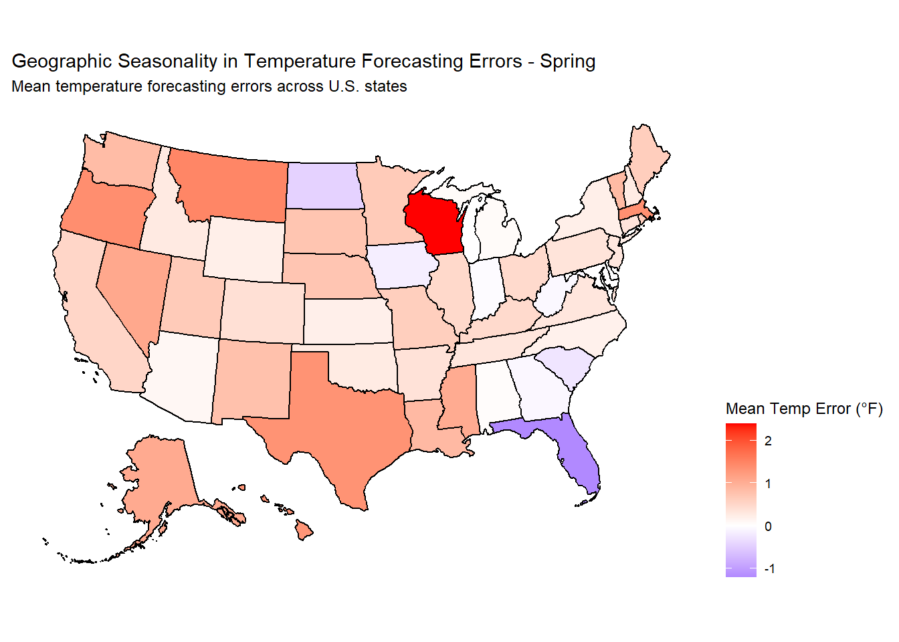
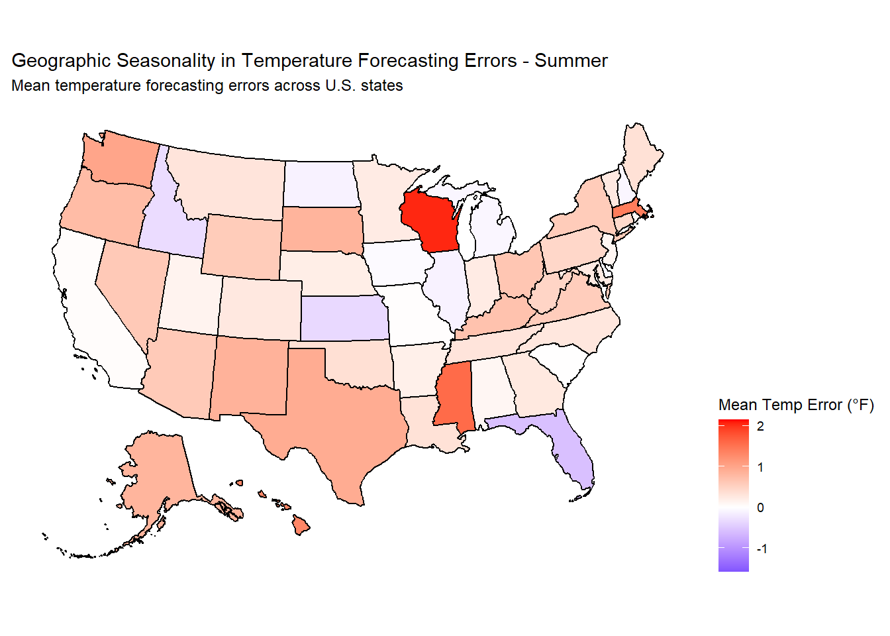
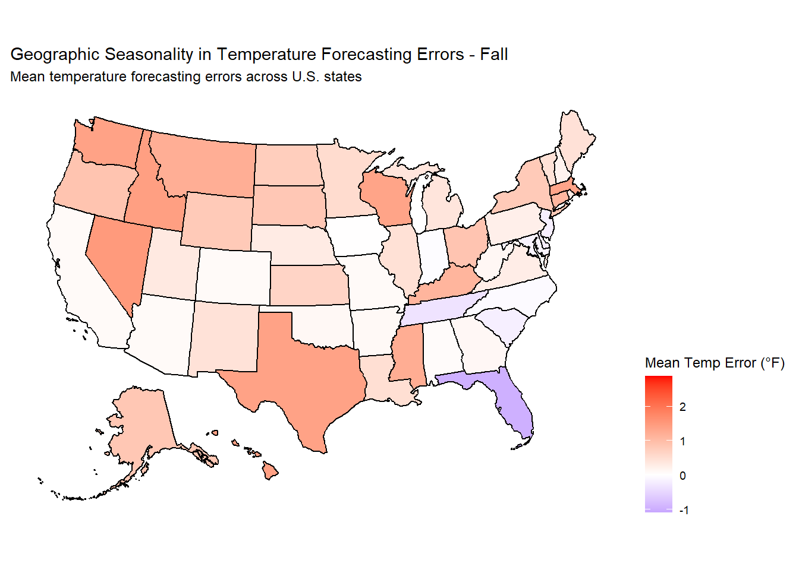
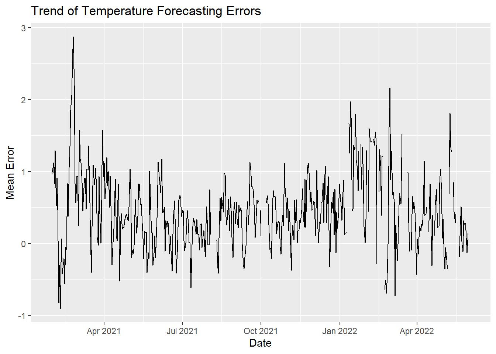

INFO 526 - Project 1
ggplot gurus: Swetha, Shalon, Deema, Kiwoon, Harsh
In this project, our team is looking at a Weather Forecast Accuracy dataset provided by the USA National Weather Service. Our aim is to learn which areas of the U.S. struggle with weather prediction and the possible reasons why. Specifically, we focussed to answer to key questions: First, where in the U.S are the predictions most and least accurate? Second, are there certain times of the year when these predictions tend to be more or less accurate? We will also include in-depth discussions of our approach and method and include why our analysis was performed the way it was. By using heatmaps and other visuals, we hope to make our findings easy to understand. Our project aims to give insights on temperature predictions and help people understand where.
Weather forecasts are a big deal. Every day, people and businesses depend on them to make all kinds of decisions. Think about it: Farmers use forecasts to decide when to plant crops. Airlines and trucking companies need them to plan routes. Even ordinary folks use them to plan picnics or decide on what to wear. Getting these predictions right can make a big difference.
So, how often are these forecasts on the mark? That’s what we wanted to figure out. We picked a dataset called Weather Forecast Accuracy from the USA National Weather Service. This dataset gives us a peek into the weather predictions and what really happened over 16 months in 167 U.S. cities.
The dataset is split into three parts. The first part, weather_forecasts, is a big list with over 650,000 observations, giving us details like which city and state the forecast was for, what the expected and actual temperatures were, and when the prediction was made. The second part, cities, provides details about 236 cities, like where they are located. And the last part, outlook_meanings, helps us understand more about the types of forecasts.
With all this data in hand, our project wants to dig into where and when temperature forecasts tend to be most accurate or where they might miss the mark. By the end, we hope to give everyone a clearer idea of how much they can trust the weather forecasts they hear every day.
In the first question, we investigated the errors in weather forecasts and their relationship to geographic clusters in the U.S. Since the advent of weather forecasting, errors in weather forecasts have always been a concern of ours, so we wanted to see what factors contribute to these errors. We thought that regional differences might be a key reason of weather forecast errors, so we analyzed the differences in forecasts across regions to see if they were significantly different for each clusters of regions.
To assess the error in temperature prediction across the U.S. and identify clusters of cities with similar error patterns, we utilized advanced geospatial data visualization techniques. Our methodology involved the creation of a choropleth map using the variables lat for latitude, lon for longitude and city in the dataset, presenting a clear visual representation of temperature_forecasting_errors(Degrees Fahrenheit) for cities. After categorizing the cities into states, we visualized the average gap per state so that we could identify patterns, making local inferences about the question.
Upon examination of the provided plots:
In summary, while the U.S. National Weather Service provides extensive forecasting, certain regions and cities experience more significant temperature prediction errors than others. Understanding these discrepancies and their underlying causes can pave the way for improvements in forecasting models, ensuring more accurate and reliable predictions in the future.
In this data visualization project, we look into the “weather_forecasts” dataset from TidyTuesday. This dataset provides us with information about how accurate temperature forecasts are in different cities across the United States. It contains data on both observed temperatures, the temperatures that were predicted, the locations of these cities, and the time of year when these forecasts were made. Our primary aim is to examine how the average errors in temperature forecasts change depending on the season and location. This analysis can shed light on whether temperature forecasts are more accurate at certain times of the year and in specific geographic areas.
To determine whether the certain regions in the U.S. exhibit seasonal variations in temperature forecast errors we used heatmaps overlaid on a map of the U.S. Our chosen visualization method is a series of heatmaps, each corresponding to a specific season, overlaid on a map of the U.S. We also created a time series plot to analyse the mean temperature error against time, offering insights into periods of increased forecasting challenges
Seasonal Classification: We first classified each date into its respective season, i.e., Winter, Spring, Summer, or Fall, based on the month. This helped us group data seasonally and observe trends specific to different times of the year.
Calculating Forecast Errors: We derived the temperature error by subtracting the forecasted temperature from the observed temperature. This gives us an idea of how accurate the forecast was, with positive values indicating the actual temperature was warmer than forecasted and negative values indicating it was cooler.
Aggregating Errors: To obtain a comprehensive view, we grouped our data by city, state, and season. We then calculated the mean temperature error for each group, giving us an average measure of how off the forecasts were for each city during each season.
Data Joining: We merged this aggregated error data with geographic information of the cities, which provides us with the latitude and longitude needed for mapping.
Mapping Errors: We then used the usmap and sf packages to create a heatmap for each season. The geographical heatmap helps visualize regions with the highest temperature forecasting errors. Darker shades indicate higher errors, making it easy to spot regions that frequently get their forecasts wrong.
Visualization: Four separate heatmaps were created, one for each season - Winter, Spring, Summer, and Fall. These visualizations allow for easy comparison of forecasting accuracy across different parts of the U.S. during different times of the year.Apart from the seasonal heatmaps we also included a time-series analysis. We plotted the trend of temperature forecasting errors over the entire time frame available in the dataset. This provides insights into whether there’s a general improvement or degradation in forecasting accuracy over time, or if there are any anomalies or notable events impacting forecasting accuracy.




# A tibble: 4 × 3
# Groups: season [4]
season city mean_temp_error
<chr> <chr> <dbl>
1 Winter FAIRBANKS 2.55
2 Fall HELENA 2.87
3 Summer HELENA 2.14
4 Spring MILWAUKEE 2.39# A tibble: 4 × 3
# Groups: season [4]
season city mean_temp_error
<chr> <chr> <dbl>
1 Fall AUSTIN -1.10
2 Summer AUSTIN -1.59
3 Spring JACKSONVILLE -1.22
4 Winter JACKSONVILLE -0.340
The created maps reveal interesting insights into the seasonality of temperature forecasting errors. Here are some key observations:
1. Winter vs Summer : The maps show that temperature forecasting errors tend to be higher in Winter compared to Summer. This could be due to the increased complexity of predicting temperature changes during the colder months.
2. Geographic Variations : The maps also highlight regional variations in forecasting accuracy. Some states consistently exhibit lower errors, while others experience higher errors across all seasons. These variations may be influenced by local climate patterns and topography.
3. Seasonal Patterns : The maps clearly illustrate the seasonal patterns of forecasting errors. For instance, errors tend to be lowest in Spring and Fall, which are transitional seasons with relatively stable weather conditions.
In conclusion, these visualizations provide valuable insights into the seasonality of temperature forecasting errors across different U.S. states. Understanding these patterns can be beneficial for improving weather forecasting models and enhancing preparedness for various weather conditions.